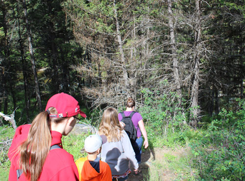
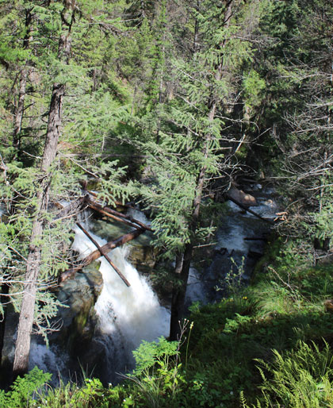
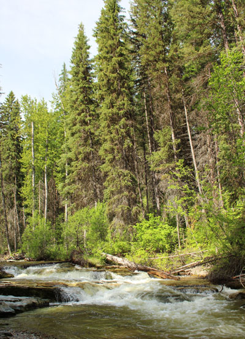
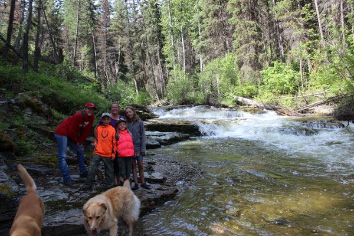
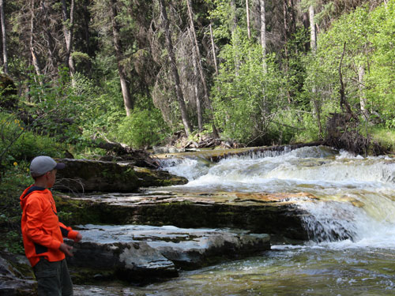
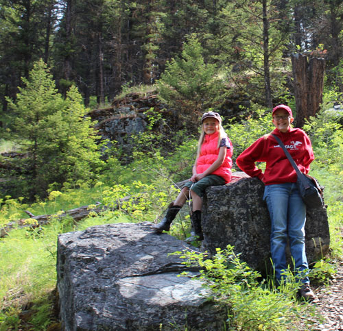

June 2017
| Eric & I were unsuccessful at finding
Pinkham Falls when we tried on our own in May, so I asked some local
experts to take me there. My friends the Browns gave me a great
escort to the area. The rivers were running high at this time of
year so the falls were very impressive. |
|
 Browns showing me the way |
 |
| My first glimpse of the falls from above | |
 |
 Brown family with an extra dog and minus Dad. |
| Just above the main falls area | |
 Isaac skipping rocks |
 |
| Cora & Anna looking pretty | |